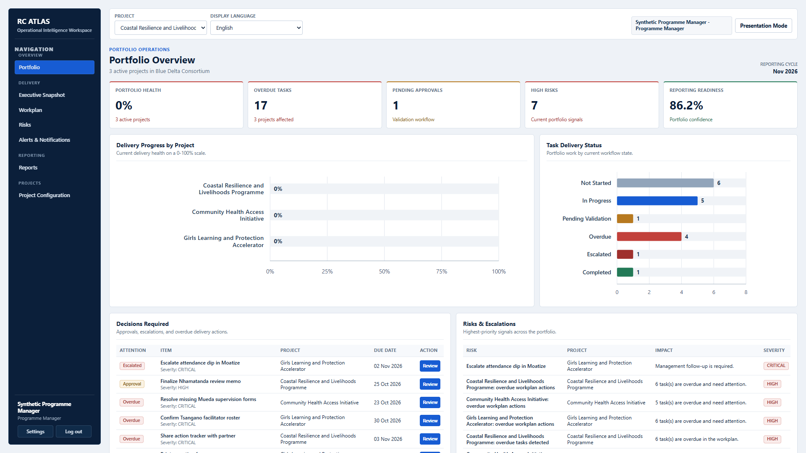
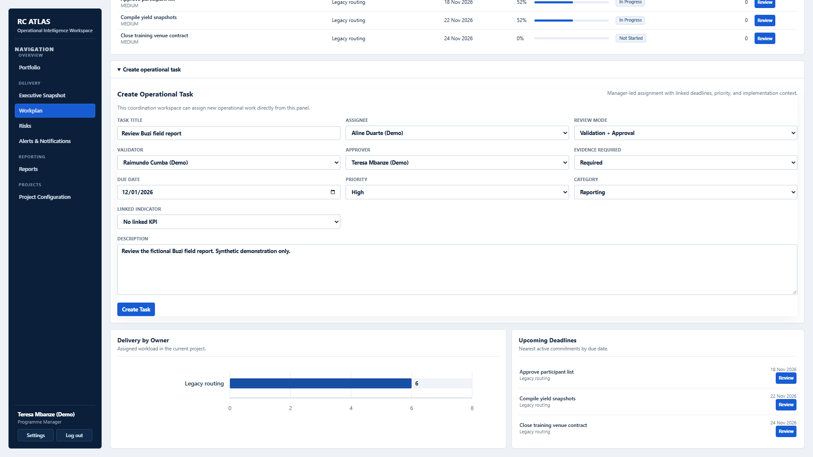
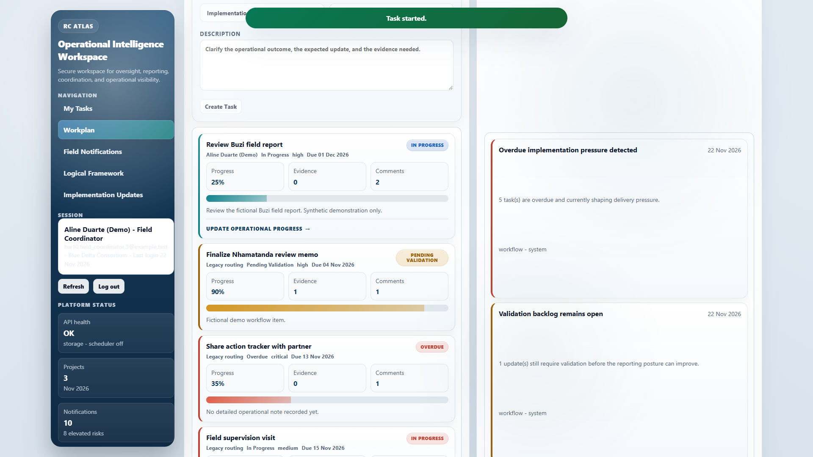
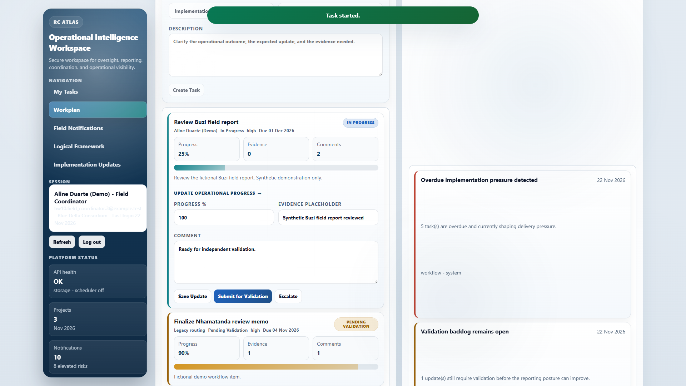
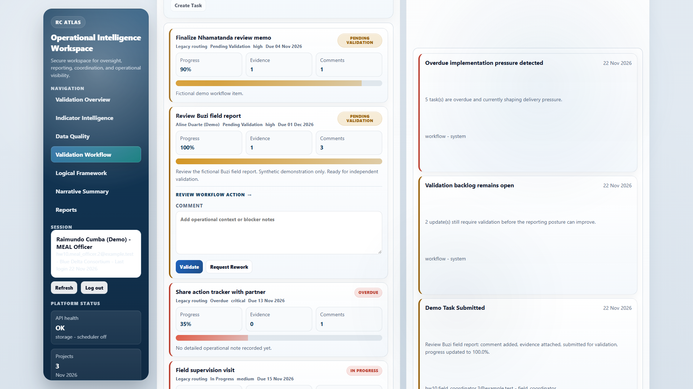
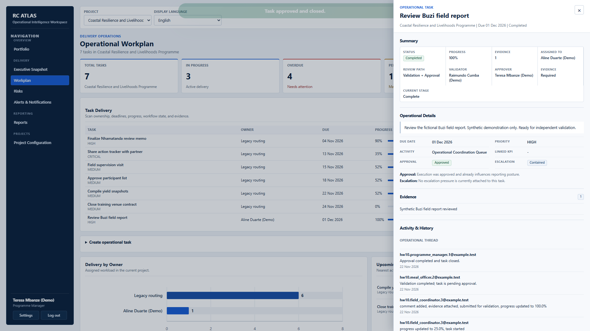
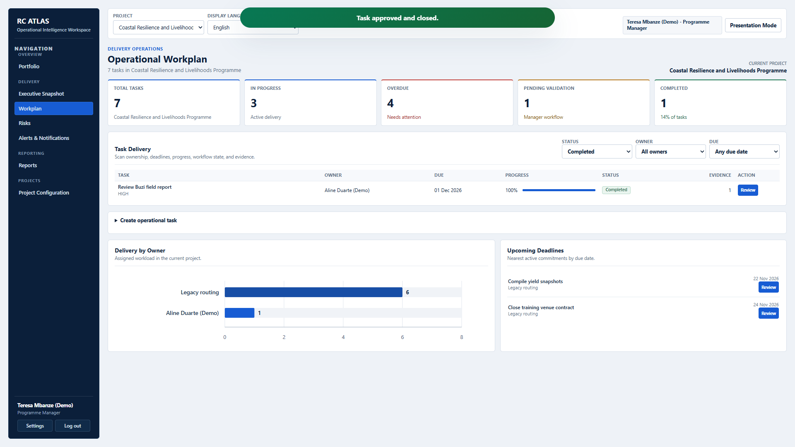

Seven native 1920 ? 1080 screenshots. Click any image for its full-resolution original. Portfolio Overview uses current accepted UI-01; the task sequence uses original HW10 evidence. See inventory for source and state qualifications.
Programme Manager ? Current accepted UI-01, Coastal Resilience and Livelihoods Programme selected. Portfolio-wide overview; existing UI-01 synthetic fixture, not the historical HW10 task session.

Programme Manager ? Filled creation form before Save: Review Buzi field report; Aline Duarte (Demo) assignee, Raimundo Cumba (Demo) validator, Teresa Mbanze (Demo) approver; validation plus approval, evidence required, deadline 2026-12-01.

Field Coordinator ? The same Buzi task is in progress at 25%, viewed by Aline Duarte (Demo).

Field Coordinator ? Filled form immediately before Submit for Validation: progress 100%, evidence note Synthetic Buzi field report reviewed, comment Ready for independent validation. Header still shows pre-submission state; this image does not claim submission has already completed.

MEAL Officer ? Raimundo Cumba (Demo) views the submitted Buzi task, pending validation at 100%, with evidence and Validate / Request Rework controls. Captured immediately before validation.

Programme Manager ? Teresa Mbanze (Demo) views the same task after approval: Completed, stage Complete, Approved, with evidence and approval history.

Programme Manager ? Completed-filter Workplan shows Review Buzi field report at 100%, owned by Aline Duarte (Demo), with one evidence entry.
